Road-Scene Multi-Class Object Detection · YOLO26n · PyTorch · Ultralytics
把「数据检查 → 标注统一 → 训练 → 评估 → 演示」完整走通的道路场景目标检测项目。重点不只是把模型训出来，而是让整条链路可复现、可追溯、每个结论都标清成立的边界。
一条六个站点的链路。每一站都有对应的脚本，每个脚本都会打印可核对的数字——而不是只给一个结果。
原始标注里混着两种格式——矩形框和多边形，必须统一。统一后又做了三层体检和人眼抽检，抽检当场抓到一处漏标。
「延迟 16.4 ms」必须连同硬件、输入尺寸、预热次数、计时方式、精度模式一起说。换个测法能差 1.45 倍。
总体 mAP 不代表每一类都可靠。有一个类在测试集只有 1 个标注框，它的 AP 是 0——这个 0 不能当结论用。
下面这张对照图不是挑好看的——是按规则自动选出来的三档：检测完整（漏检 0、误检 0）、典型漏检、典型误检。挑图规则写在 07_make_demo_figure.py 里。
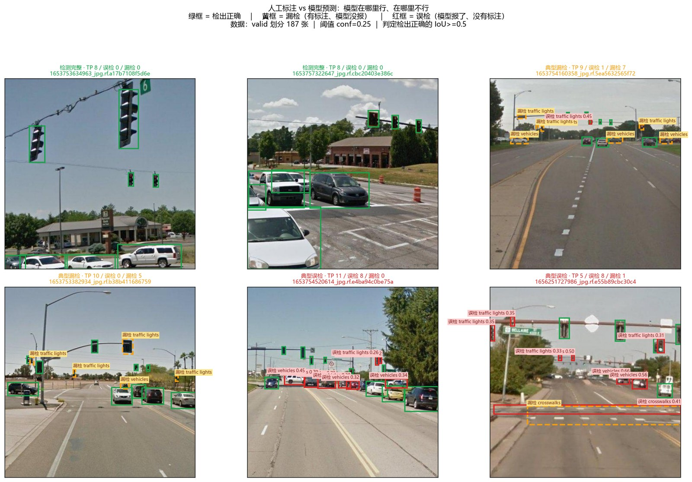
下面 8 张是 06_predict.py 跑出来的真实输出，平均每张 9.3 ms，共检出 30 个目标（traffic lights 10 / vehicles 18 / chimneys 2）。点开可放大。
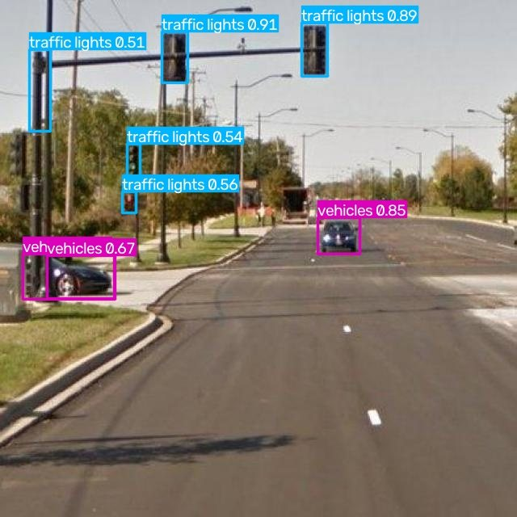
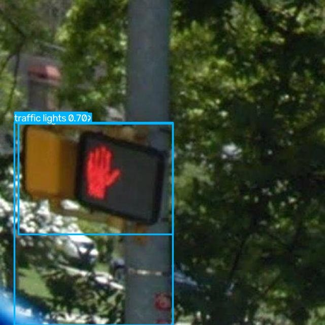
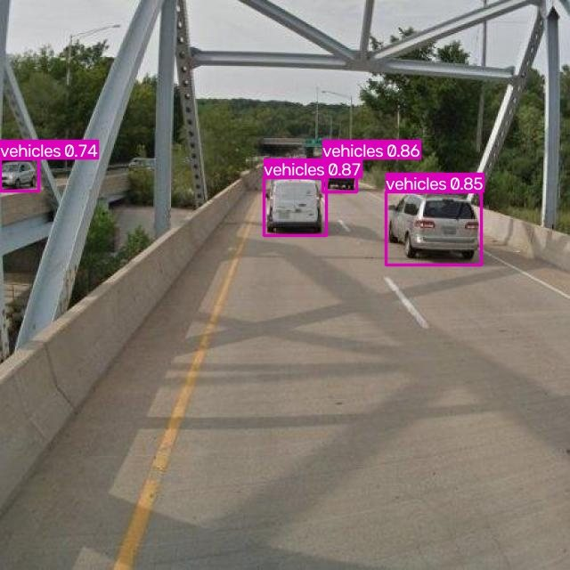
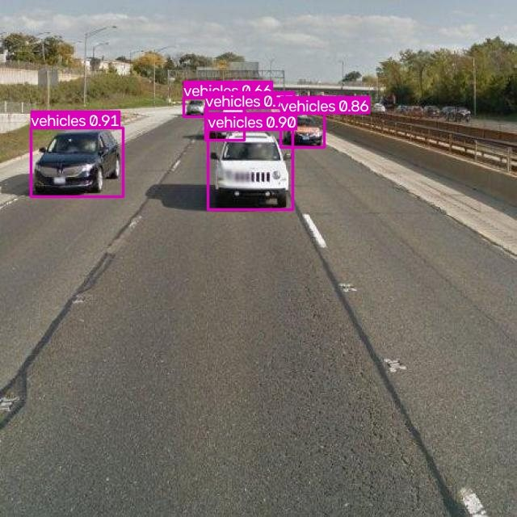
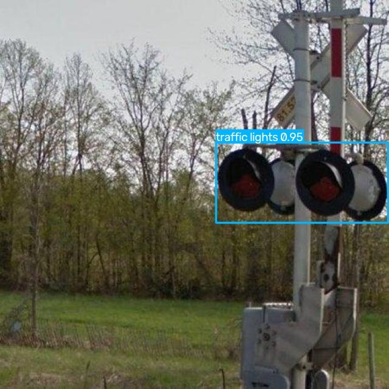
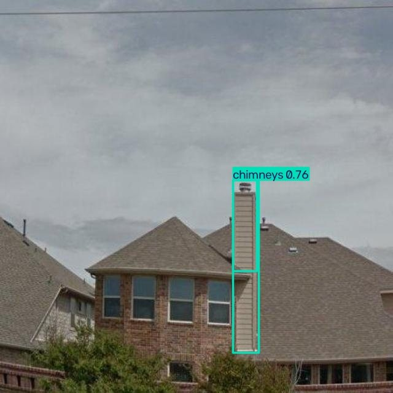
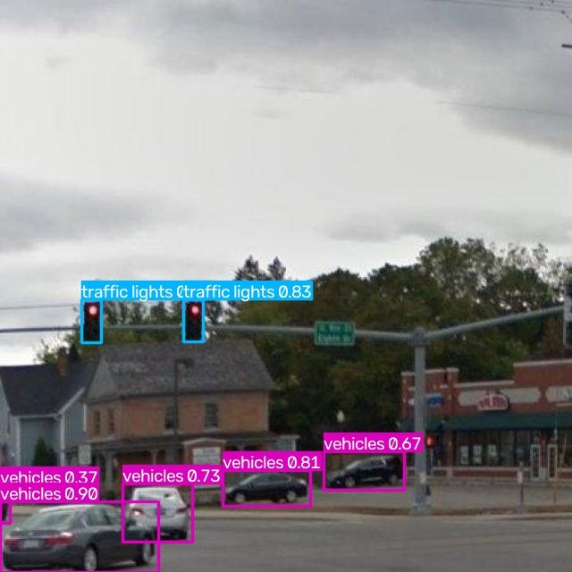
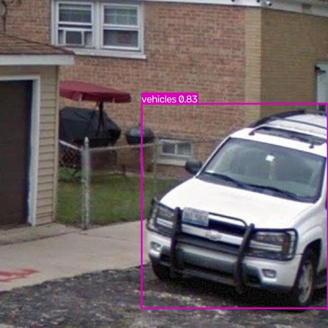
以下全部是测试集（133 张）的数字。测试集只在所有方案定稿后使用一次，用来避免「反复按测试结果挑方案」。训练时的模型选择用的是验证集。
| 指标 | 数值 | 说明 |
|---|---|---|
| mAP50 | 0.6797 | IoU 阈值 0.5 下的平均精度，最常被引用的单一指标 |
| mAP50-95 | 0.4228 | IoU 从 0.5 到 0.95 共 10 档取平均，更严格，对框的贴合度敏感 |
| 精确率 Precision | 0.7865 | 报出来的框里，有多少是对的 |
| 召回率 Recall | 0.6267 | 该报的目标里，报出来了多少 |
| 最优置信度阈值 | 0.30 | 该阈值下平均 F1 最高（0.6536） |
① 验证集和测试集不是一回事。验证集 187 张上 mAP50 是 0.641，测试集 133 张上是 0.680。两个划分的图片不同，本来就不该相等——引用时必须说清是哪个划分。
② 这个结果不能用来宣称「完成了自动驾驶感知系统」。这是 12 类、814 张图的公开数据集，既不是车载量产数据，也没有做 3D 感知、多传感器融合和时序建模。
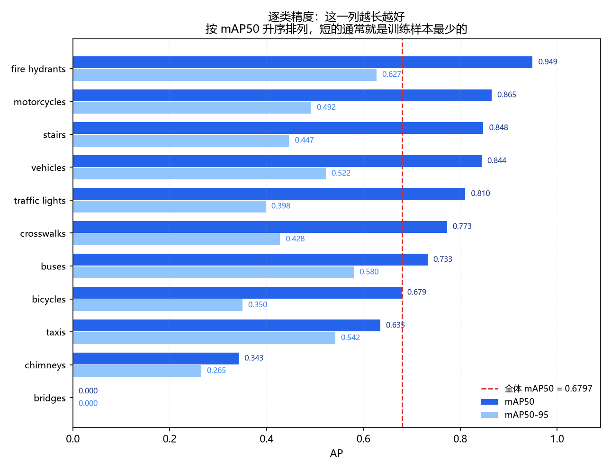
| 类别 | AP50 | mAP50-95 | 训练框 | 测试框 | AP50 相对水平 |
|---|---|---|---|---|---|
| fire hydrants 消防栓 | 0.9493 | 0.6269 | 60 | 23 | |
| motorcycles 摩托 | 0.8646 | 0.4917 | 158 | 30 | |
| stairs 台阶 | 0.8477 | 0.4466 | 32 | 6 | |
| vehicles 车辆 | 0.8441 | 0.5223 | 763 | 209 | |
| traffic lights 信号灯 | 0.8102 | 0.3979 | 459 | 129 | |
| crosswalks 人行横道 | 0.7725 | 0.4277 | 157 | 81 | |
| buses 公交 | 0.7327 | 0.5803 | 88 | 12 | |
| bicycles 自行车 | 0.6787 | 0.3502 | 46 | 22 | |
| taxis 出租 | 0.6347 | 0.5418 | 14 | 4 | |
| chimneys 烟囱 | 0.3426 | 0.2650 | 19 | 5 | |
| bridges 桥梁 | 0.0000 | 0.0000 | 7 | 1 | |
| tractors 拖拉机 | — | — | 1 | 0 | 测试集无标注，不参与评估 |
bridges 的 AP50 是 0，但它不能当结论用。这个类在训练集只有 7 个框、在测试集只有 1 个标注框。模型没检出来，AP 就是 0。它的意思是「这一个框没对上」，不是「模型认不出桥」——换一次划分就可能变成 1.0 或 0.5。
同样，tractors 在测试集里一个标注都没有，所以它根本不参与评估。这是「没考」，不是「考了 0 分」。把这两行如实标出来，比报一个好看的总体数字更重要。
总体指标回答「有多好」，混淆矩阵回答「错在哪、错成什么」。矩阵按列归一化：每一列表示「这一类的标注，被预测成了哪些类」。
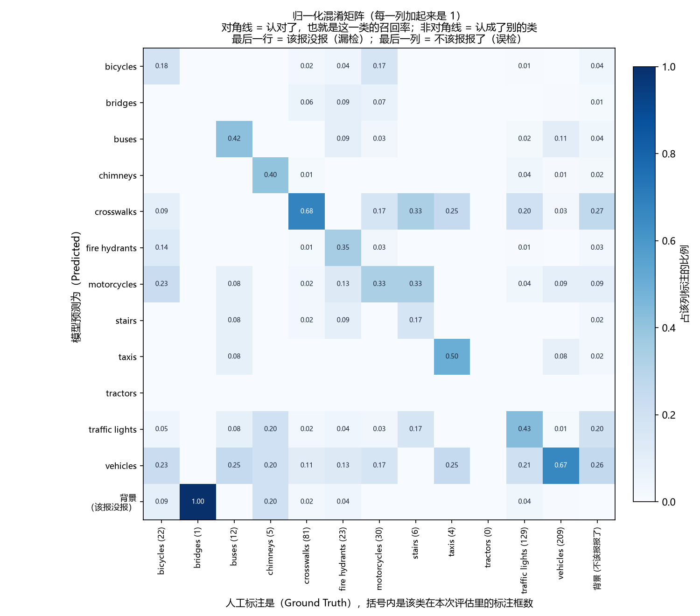
格式检查只能证明「标签符合程序规定的格式」，证明不了「每个框都框对了目标」。所以另写了一个脚本把标签画回原图做人工抽检。第一轮抽检就抓到一处漏标：
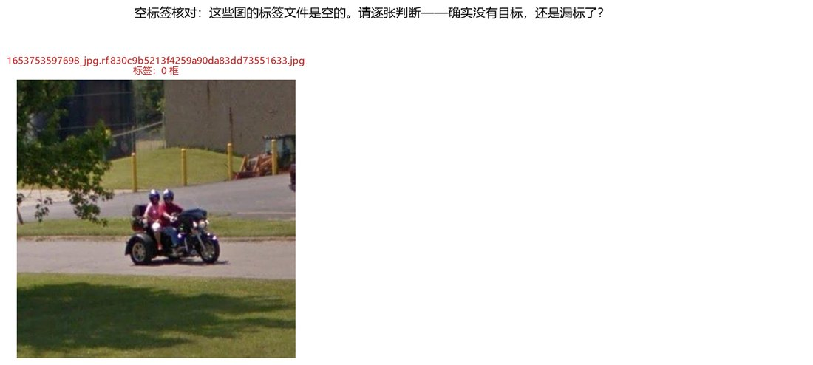
motorcycles——格式检查放它过去了，人眼一看就发现。格式合法 ≠ 标注正确。自动化检查能覆盖「结构」和「数值范围」，覆盖不了「语义」。所以数据验收必须留一步人工抽检，而且抽检要能被复现（同一个脚本、同一组参数、同一批图）。
12 个类的样本量极不均衡：最多的 vehicles 有 763 个框，最少的 tractors 只有 1 个框，相差 763 倍。这个分布直接解释了上面逐类 AP 的差距。
我知道它为什么学不会（样本太少），也知道该往哪改（重采样 / 类别加权 / 补数据），但没有做这个对照实验。所以这里只记录「发现 → 定位 → 未解决」，不写「改进后提升多少」。把没做的事说成做了，比不写更糟。
「延迟 xx ms」这句话不加条件是没有意义的。同一份权重、同一张图，换个测法就能差一倍以上。下面每个数字都带完整条件。
| 测量条件 | 取值 |
|---|---|
| 硬件 | NVIDIA GeForce RTX 5060 Laptop GPU，8 GB 显存（sm_120） |
| 输入尺寸 | 640×640（letterbox 填充） |
| 预热次数 | 单张 30 次 / 批量 6 次 |
| 样本量 | 单张 n=200 / 批量 n=50（批大小 8） |
| 计时方式 | 纯前向用 CUDA Event；端到端用 perf_counter + cuda.synchronize() |
| 精度模式 | FP32 与 FP16 各测两轮，四个进程分开启动 |
| 机器状态 | 空闲（没有并行任务） |
| 口径 | FP32 第 1 轮 | FP32 第 2 轮 | FP16 第 1 轮 | FP16 第 2 轮 |
|---|---|---|---|---|
| 端到端 · 单张（均值） | 16.39 | 16.45 | 17.84 | 27.97 |
| 端到端 · 批量 8（每张） | 8.76 | 7.81 | 6.53 | 8.02 |
| 纯 GPU 前向（中位） | 15.78 | 13.76 | 19.46 | 21.57 |
| 吞吐（批量 8） | 114 FPS | 128 FPS | 153 FPS | 125 FPS |
单位：毫秒。冷启动（进程内第一次推理，含 CUDA kernel 编译）约 34–43 秒，属于一次性开销。
两轮测量完全一致（16.39 / 16.45），所以这个数是可信的。批量 8 时每张约 8 ms，吞吐提升约 2 倍——批量化才是真正的提速手段。
两轮差了 57%（17.84 / 27.97）。我没有做 profiling，所以不解释原因，只说现象：在这台机器上 FP16 单张没有稳定收益，批量下两者才接近。可以直接在页面上说「不许说 FP16 一般能快 2 倍」。
第一版测出来的是单张 23.7 ms。后来复现不出来，查下来是：测的时候机器正在并行跑文档渲染，而且每组只测了一次、一个进程连跑 1200 多次推理（笔记本持续降频）。
空闲状态重测只有 16.4 ms——第一版比真实值高了 45%。所以我又做了一次顺序平衡的重复实验（每档两轮、四个进程分开启动），才有了上面这张表。报出来的每个数字，都补上了「机器是否空闲」和「测了几轮」这两个条件。
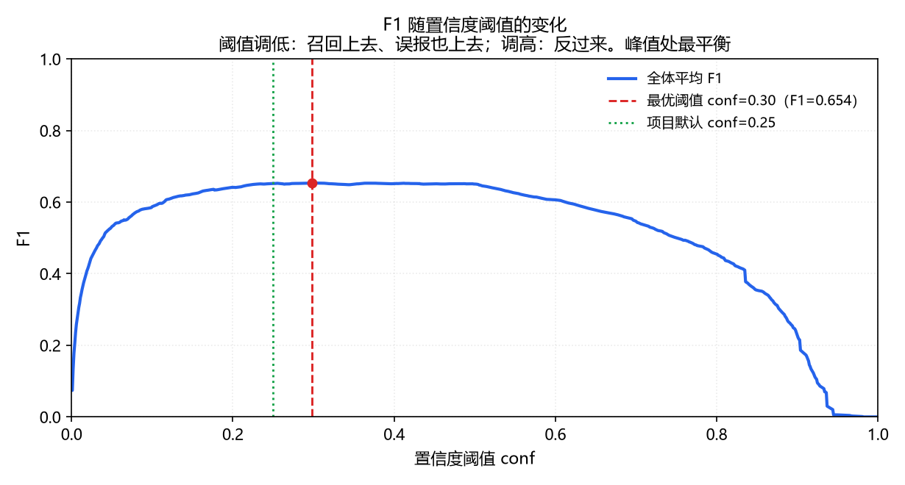
用 Ultralytics 内置的 ByteTrack 做视频跟踪：120 帧逐帧检测出 373 个框，收敛成 4 条轨迹，其中 3 条跟满全程、1 条在第 13 帧出画面后丢失。
数据集本身不支持跟踪演示。814 张图按时间戳排序后，相邻两张的最小间隔是 1.09 秒，普遍在 4.8–5.5 秒——它是一套「约 5 秒抽一帧」的快照集，不是视频抽帧。拿它硬做跟踪，目标早跑出画面了，ID 会疯狂新建。
所以这段视频是用一张真实道路图合成的缓慢平移片段，用来验证跟踪链路本身是通的（检测 → 关联 → 轨迹 ID）。它是链路验证，不是效果演示。要真正展示跟踪效果，需要另外录一段真实道路视频。
| 跟踪统计 | 数值 |
|---|---|
| 处理帧数 | 120 |
| 逐帧检测框总数 | 373 |
| 轨迹总数 | 4 |
| 只出现 1 帧的轨迹 | 0 |
| 轨迹寿命（中位） | 120 帧 |
| 处理总耗时 | 5.69 s |
项目一共 14 个脚本，分为两层：前 7 个管「数据对不对」，后 7 个管「结论站不站得住」。
| 脚本 | 作用 |
|---|---|
dataset_config.py | 唯一的路径与类别解析入口，从 data.yaml 读——换数据集只改一处 |
01_check_dataset.py | 结构与格式检查：图片/标签配对、字段数、数值范围 |
02_inspect_label_formats.py | 标注格式分类统计（矩形框 vs 多边形） |
03_find_bad_coordinates.py | 多边形标注的数值专项排查 |
04_convert_labels_to_detection.py | 多边形 → 最小外接矩形，生成检测框数据集 |
05_validate_detection_dataset.py | 转换后数据集验收 + 类别分布统计 |
visualize_labels.py | 把标签画回原图，人工抽检（抽检抓漏标就靠它） |
06_predict.py | 统一推理入口：单图 / 目录 / 视频 / 摄像头 |
07_make_demo_figure.py | 按规则自动挑图，生成「标注 vs 预测」三档对照拼图 |
08_track.py | 视频多目标跟踪 + 轨迹统计 |
09_evaluate.py | 正式评估：逐类指标 / 最优阈值 / 混淆矩阵 + 自动出报告 |
benchmark_inference.py | 推理性能测试，三档计时分开报 |
check_data_leakage.py | 数据泄漏三重检查：md5 精确重复 + 感知哈希近似重复 + 时间戳邻域 |
划分内 0 组、跨划分 0 对完全相同；画面近似检查（dHash 阈值 5）跨划分也是 0 对。抽样里最接近的一对距离是 15，是阈值的 3 倍——说明检查有区分度，不是「什么都算重复」。
三个划分的时间戳跨度完全重叠，跨划分最近的一对只隔 4.9 秒，1 分钟内有 158 对。说明划分是按图随机切的，可能存在轻度场景重叠，测试指标要按偏乐观来理解。
时间戳靠得近只是弱证据，不等于画面重复。所以结论是「内容级没有重复 + 划分方式存在场景重叠风险」，而不是「没有数据泄漏」。
requirements.txt pin 了实测版本，README 写清了从零建环境的步骤、脚本运行顺序、真实训练命令与结果目录。数据来源与许可（CC BY 4.0）也标明了。
数据转换有审计报告，性能测试有四轮原始统计量，泄漏检查有完整结果 JSON，连一次失败运行的参数快照都留档当证据。
仓库里有固定的依赖清单（requirements.txt，版本来自实测环境）和分步运行说明。数据来源与许可写在 README 第 3 节，训练命令在第 5 节。每个脚本都能独立运行，而且都会打印出可核对的数字——不是只给一个结果。
把边界写清楚，比多报两个指标更有用。下面每一条都是这个项目真实存在的情况。
| 能说明 | 不能说明 |
|---|---|
| 能独立完成「数据检查 → 标注统一 → 训练 → 评估」的全链路 | 不能说明具备量产级感知系统的工程能力 |
| 能定位数据层面的问题（格式混排、漏标、长尾、场景重叠） | 不能说明每个标注框都准确——只抽检过一部分 |
| 能读懂训练曲线并判断过拟合、判断瓶颈在哪 | 不能说明做过超参搜索、模型结构改进或集成 |
| 能给「延迟」这类指标配上完整测量条件，并发现自己的旧数据复现不出来 | 不能说明做过 TensorRT / ONNX 等部署优化（这一阶段明确暂缓） |
| 能按类别指出模型的弱项，并解释弱项与样本量的关系 | 不能说明解决了长尾问题——只发现了，没有做改进实验 |
| 能诚实划出「我会 / 我不会」的分界 | 不能说明接触过 3D 感知、多传感器融合、时序建模 |
这是一个把一条完整链路走通、并且把每个结论的成立条件都说清楚的基线项目。它的价值不在指标有多高，而在每一步都能被追问、被复现、被验证。